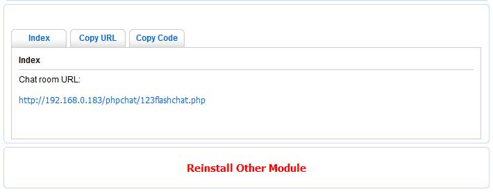

1. Requirements
|
PHP chat has a few requirements which must be met before you are able to install and use it.
* A webserver or web hosting account running on any major Operating System with support for PHP
* PHP 5.0.0+ (>5.x.x, >6.0-dev )
* If you need to do database integration.A SQL database system, one of:
MySQL 3.23 or above
MS SQL Server 2000 or above
Oracle
is required.
|
2. Quick install
1), Decompress the php chat package to a local directory on your system.
2), Upload PHP chat folder and the files in it containing in the installation package to your web server.
3), Change the permissions on the following directories to be writable by all:
phpchat/configure/, phpchat/install/
4), Using your web browser visit the location you placed phpchat with the addition of index.php,
e.g.
http://www.mydomain.com/phpchat/
5), Click the INSTALL NOW button, follow the steps and fill out all the requested information.
|
3. Advanced Install
3.1 Select integration module
PHP Chat Accord to your requirement to the website chat room, PHP chat will offer you three integrated modules for you to choose.
1), Enter the installation page, click the "INSTALL NOW " button, and then it will take you to the module selection page.
2), If the CMS or Forum system you're running on your website is included in modules selection lists, we recommend you to use 3rd party module for integration instead of PHP Chat because the particular 3rd party module can save your efforts in integration.
3), Please select your website type, click "download" so as to download relevant module installation package. Please integrate it according to the installation guide in the package.
4), If you choose to use 3rd party module to do website integration, it is unnecessary for you to install php chat integrated package. Otherwise, please click "Others" to enter and view the Select PHP Chat integrated mode
|
3.2 Select PHP Chat integrated mode
1) Chat server hosted by 123flashchat free of charge. This chat server mode aims at testing the basic functions, only supported 1 room, no video chat function, and also you don't have the administrator permission of entering this chat room, you can select the mode Chat server hosted by 123flashchat or Chat server hosted by your own to get the full functions and control your chat room.
2) Chat server hosted by 123flashchat. For paid host, please set the Chat Client Location like this, for example: http://host71200.123flashchat.com/phpchat/ , Buy host here; For trial host, please setup Chat Client Location like this: http://trial.123flashchat.com/yourhostname/ Just replace "yourhostname" to the real one when you applied, Apply trial host
3) Chat server hosted by your own. Please download and install 123FlashChat first: http://www.123flashchat.com/download.html, and set Chat Client Location to: http://<your chat server domain or ip>:35555/ |
3.3 Free mode install instruction
1), In Select PHP Chat integrated mode page please select "Host chat room free of charge by 123flashchat.com" (Free mode).
2), Fill in your favorable room name and click "next" to complete installation.
|
3.4 Host mode install instruction
1), In Select php chat integrated mode page, please select "Host chat room by 123flashchat.com" (Host mode)
2), The host address format is as follows.
http://yourHostServerAddress/yourHostName/
e.g: http://host71200.123flashchat.com/phpchat/
If you fill in it with a wrong format, you are not able to do the next operation. |
3.5 Local mode install instruction
1), In Select PHP Chat Integrate Mode page, please select "Chat server hosted by your own" (Local mode).
2), Please download and install 123 Flash Chat, we recommend you to use the version contain JRE
Chat Client Path filling format is as below
http://www.example.com:35555/
For example,
if your chat domain name is "mychatdomain.com" : http://mychatdomain.com:35555/
|
3.6 Auto login (for Host mode and Local mode)
If you use Host Mode or Local mode, you need to add these code to configure/config.php for auto login chat.
$select_db = 'mysql'; // mysql,mssql,oracle,dbal
$param_db_host = 'localhost'; //default : localhost
$param_db_port = '3306'; //database port
$param_db_name = ''; //dabase name
$param_db_user = 'root'; //database user
$param_db_password = ''; //database password
$param_db_user_table = ''; //user table
$param_username_field = 'username'; //user field
$param_pw_field = 'password'; //password filed
$enablemd5 = 'Off'; // enable md5 (Off,On)
Please configure login_chat.php address to the chat admin panel
Log into chat admin panel -> Server Settings -> Integration -> DataBase -> URL -> fill login_chat.php URL into 'URL' blank -> save it.
Server Management -> Restart -> Restart Server.
|
4. Install done,copy code and link

As the illustration above
You can view the installed chat room page under index tab.
You can gain the link address for chat room under Copy URL tab.
You can gain the chat room code under Copy Code tab. insert the code into your page then the chat room will be shown in the current page. It is necessary for the licensed user to modify the swf address for making sure the path of phpchat/client/123flashchat.swf is correct. |
5. Remove install folder
|
After you complete installation, you are not able to install it again. If you really want to install it again, please click "Reinstall Other Module" and begin from Quick install.
When you complete the installation, you will be lead to the copy code and link. |
6 Advance
6.1 Integration mode and relevant parameters filling annotation
We recommend you use this mode because it can reduce the numbers of the database connecting pool and relief the burden for database.
After you filling database configuration information, please make sure that you save these information to the "configure / config.php" for login_chat.php calling. PHP Chat supports MySQL, MS SQL and Oracle at present.
login_chat.php URL Output:
(What does each number means in terms of the authentication result.)
0 - login successfully;
1 - wrong password;
2 - the username can't be used;
3 - login error
4 - username does not exist
5 - successfully log in as an administrator |
6.2 API for Developers
If you're running 123FlashChat server side by yourself or host 123FlashChat chat room by 123flashchat.com,
and you're ready to integrate chat room with your existing user databases, you can configure the PHP Chat API
after you finish installing the PHP Chat. If you’re using the free chat room provided by us, please ignore
this chapter.
PHP chat offers two API files and they are located in phpchat/api/
1). Transfer Username and Password API for auto login.
During the PHP chat installing process, if you have already selected and integrated your website database,
you can use this API, no matter you choosing Database integrated mode or URL integrated mode.
Api_user_session.php API files are used to transfer the username and password for the user who have logon
into your website.
Once you pass the current user’s username and password to the variables of $username and $password
respectively in Api_user_session.php which is called by 123flashchat.php, you don't need to login twice to
access 123FlashChat chat room.
sample code:
//code begin
/*After the user login into your website, Their username and password can be gained from your website's
"Session" or "Cookie".The Api_user_session.php need gain the login user's username and password, you should rewrite the script to
pass the values to the variables of $username and $password respectively for the calling of 123flashchat.php.
For doing so, there is no need for the user to type its password again to log in the chat room when he or she
visits the pages of 123flashchat.php. */
session_start();
$username= $_SESSION[username];
$password= $_SESSION[password];
//code end
2). Password encryption method API for authentication.
Api_password_encrypt.php API file is used to add your website special password encrypt algorithms helped to
identify the encrypted password. Here we use API to pass the name of encrypted method then login_chat.php
will call this function to validate the password. If you change the path of Api_password_encrypt.php, you
also need to change Api_password_encrypt.php include path in login_chat.php
For password authentication, if your encryption method is not MD5, you may need to add your encryption
algorithm into API, and assign the function name of your encryption method to password_encrypt_function_name,
your encryption method will be called automatically to be used to authenticate user’s account.
sample code:
//code begin
//assume the following function is your website's special password encrypt algorithms
function hash_pw($password){
$salt = "phpchat";
return md5($password.$salt);
}
$password_encrypt_function_name = "hash_pw";
//code end
|
|